Будую власні продуктиI build my own products
Я Віталій Майборода. Створюю застосунки, цифрових ведучих для прямих ефірів, інтернет-радіо, музику та AI-відео. Від ідеї до робочого білду, який можна показати людям.I am Vitalii Maiboroda. I create apps, digital hosts for live streams, an internet radio, music and AI video. From an idea to a working build you can put in front of people.
Чотири проєкти, які я створив і веду самFour projects I created and run myself
Кожен має власну сторінку з реальними кадрами, відео та тим, як він працює.Each one has its own page with real footage, video and how it works.
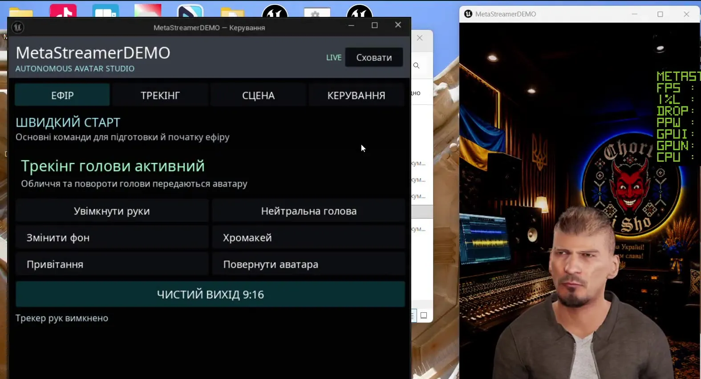
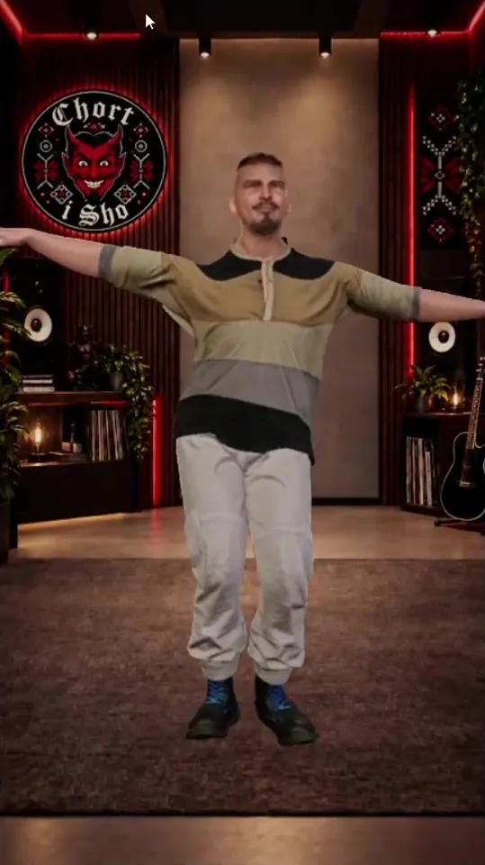
MetaStreamer
Цифровий ведучий MetaHuman у прямому ефірі. Міміка й руки в реальному часі, вертикальний вихід для TikTok LIVE.A MetaHuman digital host, live. Face and hands in real time, vertical output for TikTok LIVE.
ВідкритиOpen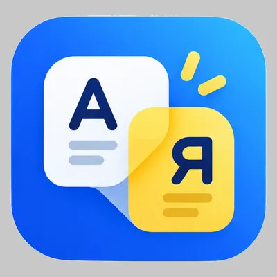
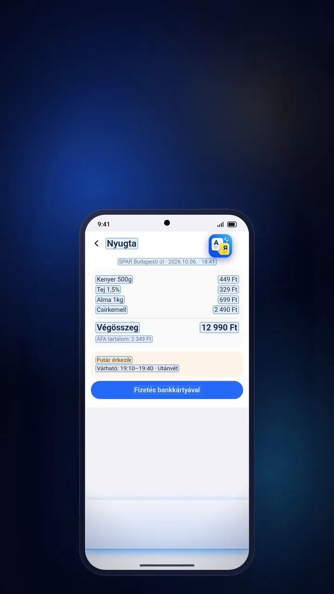
MoVa+
Переклад поверх екрана: будь-який застосунок українською за один дотик.On-screen translation: any app in Ukrainian with one tap.
ВідкритиOpen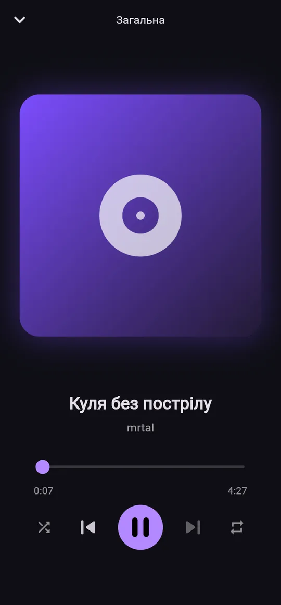
VOL.AI
Радіо незалежних авторів: станції, чарт, мікс, Android, Android Auto і веб.An independent artists radio: stations, chart, mix, Android, Android Auto and web.
ВідкритиOpen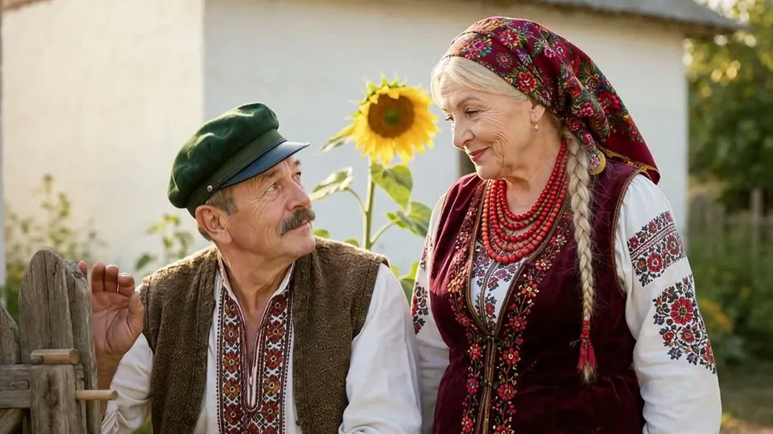
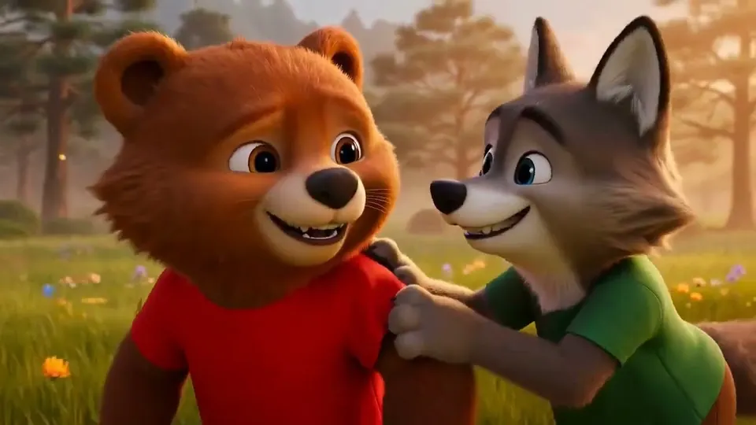
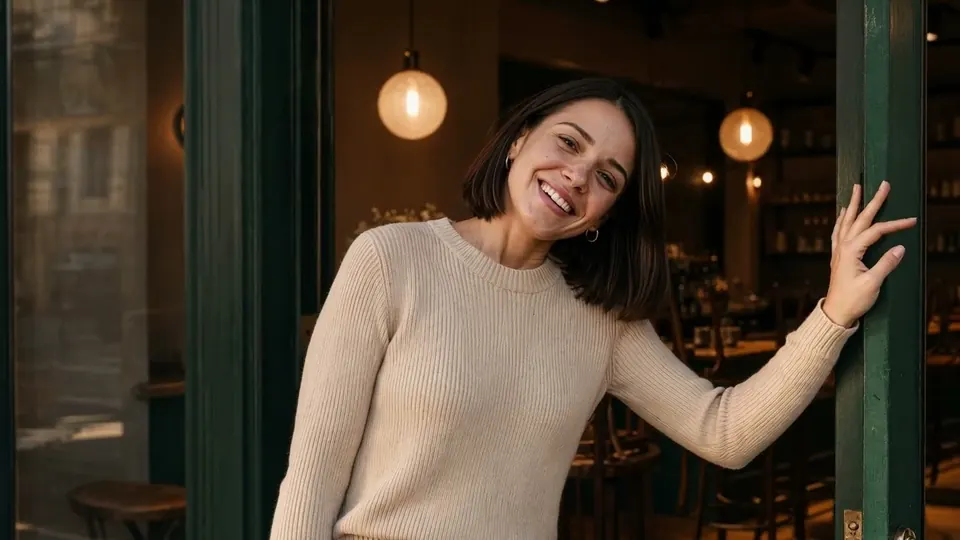
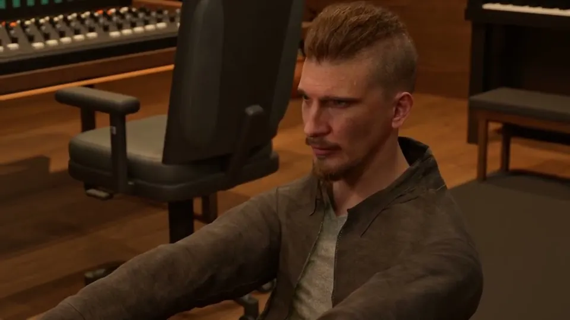
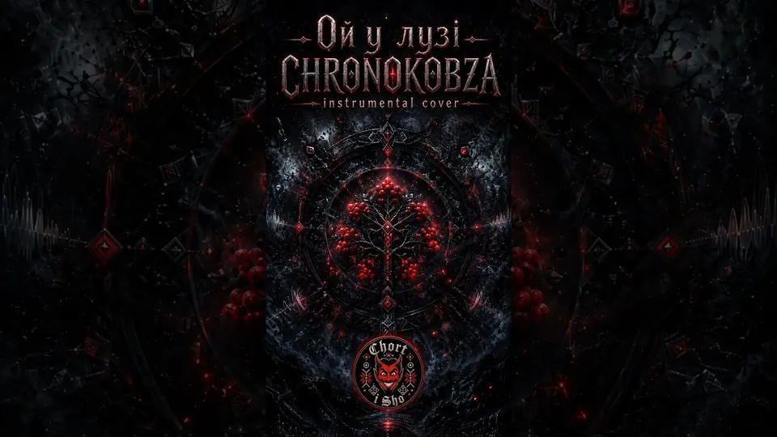
Chort i Sho
Українські пісні, кліпи та AI-відео. Публічні кредити на Qobuz і Apple Music.Ukrainian songs, music videos and AI video. Public credits on Qobuz and Apple Music.
ВідкритиOpenКод, звук і картинка в одних рукахCode, sound and picture in one pair of hands
Застосунки й сервісиApps and services
Android, Windows і веб. Від прототипу до релізу з тестувальниками.Android, Windows and web. From prototype to a release with testers.
AI-аватари для ефірівAI avatars for streams
MetaHuman, трекінг обличчя й рук, вихід для TikTok LIVE.MetaHuman, face and hand tracking, output for TikTok LIVE.
Радіо й аудіоRadio and audio
Інтернет-радіо, станції авторів, озвучення клоном власного голосу.Internet radio, artist stations, voice-over with a clone of my own voice.
Музика й AI-відеоMusic and AI video
Пісні, кліпи, трейлери й Shorts, які я генерую та монтую сам.Songs, music videos, trailers and Shorts I generate and edit myself.
Автоматизація, 3D та експериментиAutomation, 3D and experiments
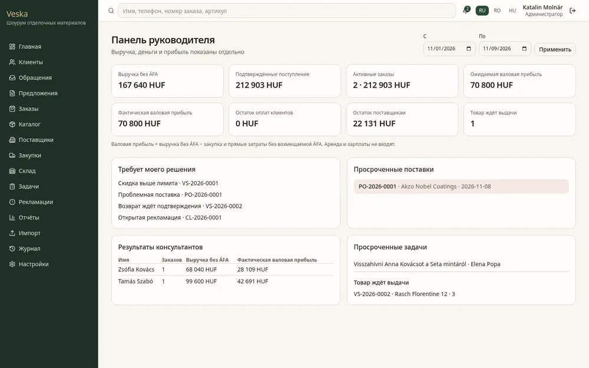
Veska CRM
CRM для шоуруму в Будапешті.A CRM for a showroom in Budapest.
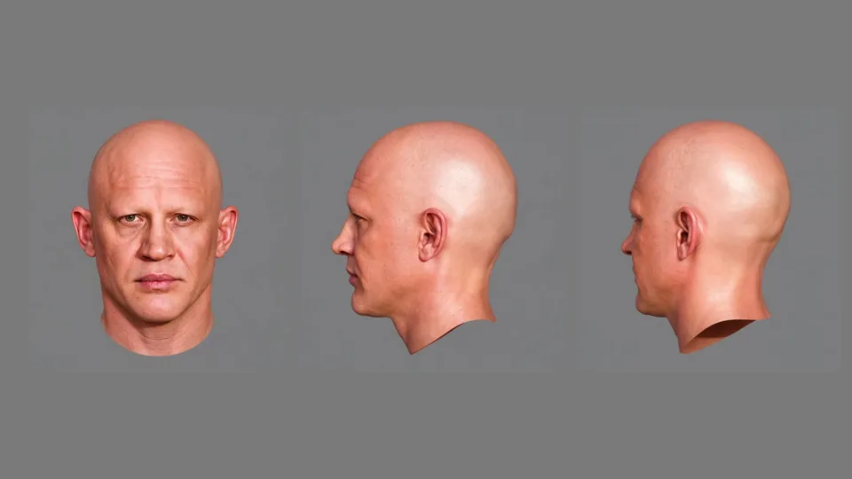
fb_auto_metahuman
Голова MetaHuman за фото чи відео.A MetaHuman head from a photo or video.
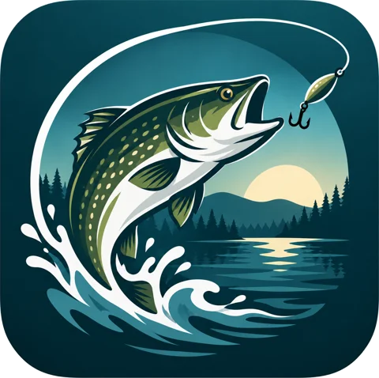
Fishing-in-HU
Підготовка до рибальського іспиту.Fishing licence exam prep.
Маєте ідею, продукт чи трек? Давайте зробимо.Got an idea, a product or a track? Let's build it.
Найшвидше відповідаю в Telegram. Пишіть щодо співпраці, MetaStreamer, VOL.AI чи музики.Telegram is the fastest way to reach me. Write about collaboration, MetaStreamer, VOL.AI or music.